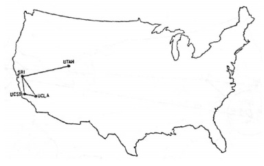
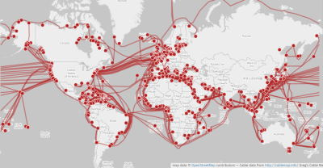

A Internet é uma tecnologia que nasceu na Guerra Fria.
Foi criada como uma forma de manter seguras as informações contidas nas bases militares estadunidenses, temendo um possível ataque soviético. Desenvolvido pela DARPA, a ARPANET surgiu como embrião do que viria a se tornar a Internet como a conhecemos hoje.
Funcionava com um sistema chamado chaveamento de pacotes. Nesse sistema, o arquivo é dividido em pequenos pacotes, e esses são transmitidos pela rede. Ao chegarem no computador do cliente, os pedaços são reunidos para formar novamente a informação desejada
O primeiro email da história foi enviado em 29 de Outubro de 1969. O texto desse email era "LOGIN", mas o computador que o recebeu parou de funcionar após receber a letra "O".
A rede da Arpanet tinha apenas 4 pontos E se parecia com isso:
Hoje em dia, a Internet possuí milhares de dispositivos conectados, e seus pontos de conexão se parecem com isso:
Após o choque inicial, os dois blocos econômicos mergulharam em um período denominado Coexistência Pacífica. As potências já não se preocupavam mais com a iminência de um ataque do bloco inimigo. Portanto, os EUA permitiram que a ARPANET fosse desenvolvida nas universidades.
Com o tempo, novos pontos não-militares (sendo a maioria universidades) começaram a sobrecarregar a ARPANET. Por conta disso, ela foi separada em duas novas redes: a MILNET — que possuía apenas localidades militares — e a nova ARPANET — que possuía apenas localidades não-militares.
Empresas particulares começaram a criar redes menores, de forma um pouco anárquica. O protocolo de rede anterior, o NCP não estava suportando a nova demanda. Por conta disso, foram criados os protocolos TCP/IP, desenvolvido por Robert Kahn e Vint Cerf. Em 1983, esse protocolo substitui definitivamente o protocolo NCP. Esse dia ficou conhecido como Flag Day.
O cientista Tim Berners-Lee do CERN criou a World Wide Web e o protocolo HTTP em 1992. Além disso, criou também a HTML utilizada até hoje (em sua quinta versão) para a criação de sites com hipertexto. Ou seja, documentos ligados entre si.
Em 1989, o Ministério da Ciência e Tecnologia lançou como projeto a RNP. A finalidade desse projeto era a de operar uma rede acadêmica nacional, difundindo a tecnologia da Internet através da implantação do primeiro backbone nacional, que foi inaugurado em 1991.
Em 1995, esse backbone que era exclusivamente acadêmico se tornou aberto aos provedores de acesso comerciais
O projeto do RNP teve sua segunda versão, que conecta mais de 27 estados brasileiros e 300 instituições de ensino superior. Depois de 2005, a rede foi ampliada com uso da tecnologia de fibra óptica. Atualmente, no Brasil, há cerca de 169,7 milhões de dispositivos conectados à rede. Isso é 81% da população brasileira, e esse número segue em expansão!